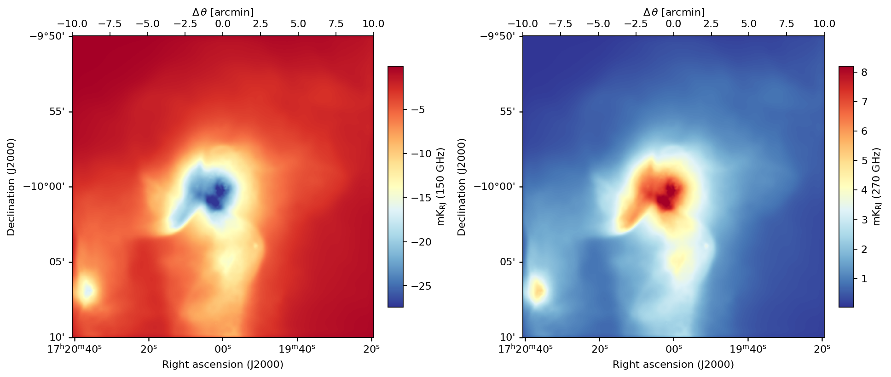
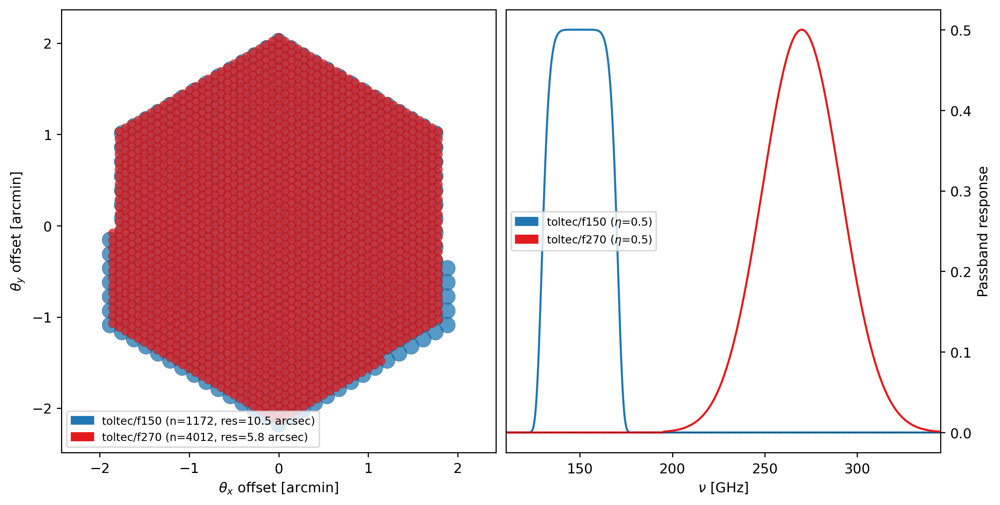
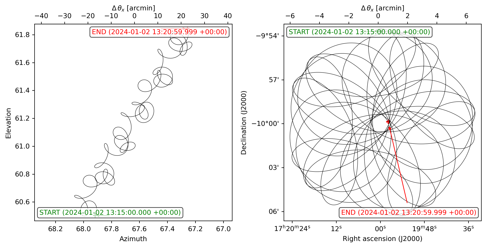
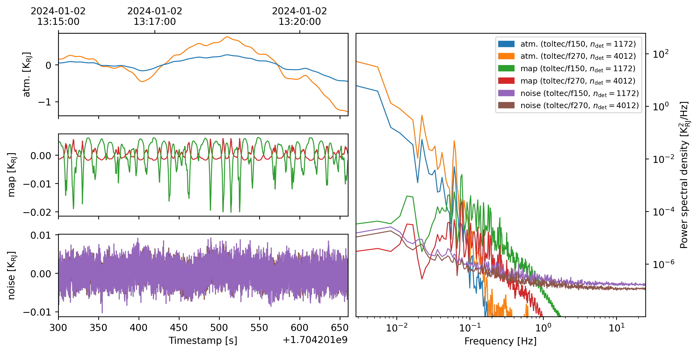
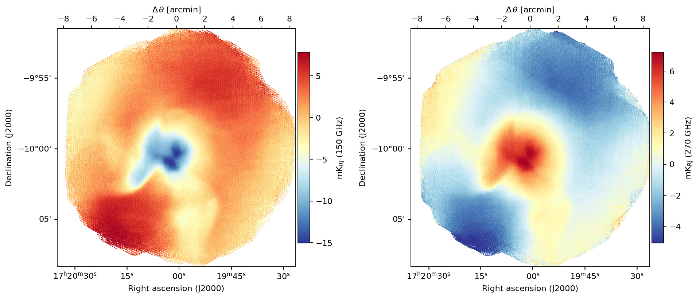
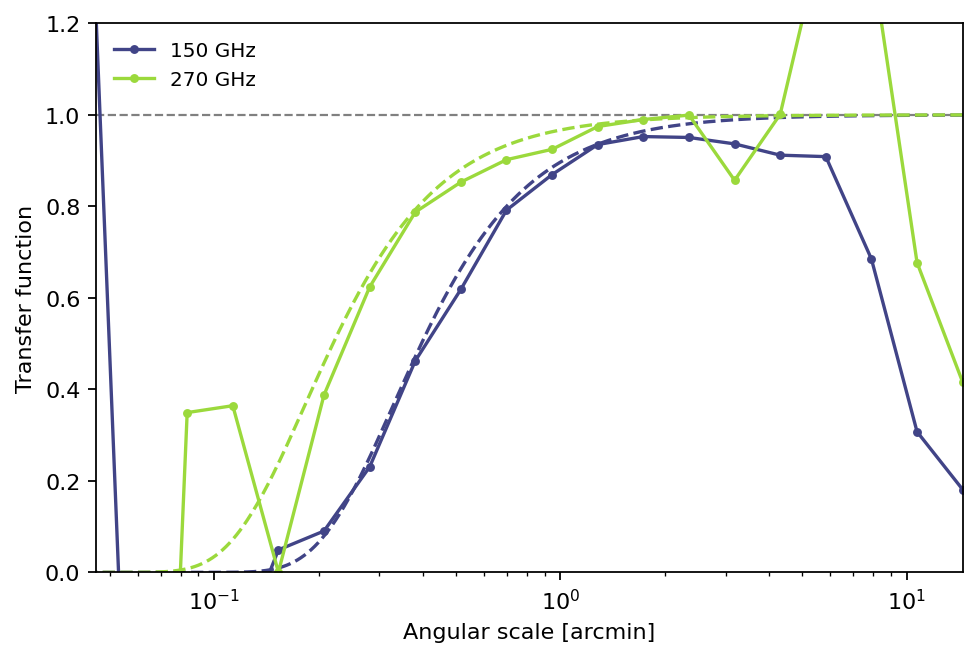
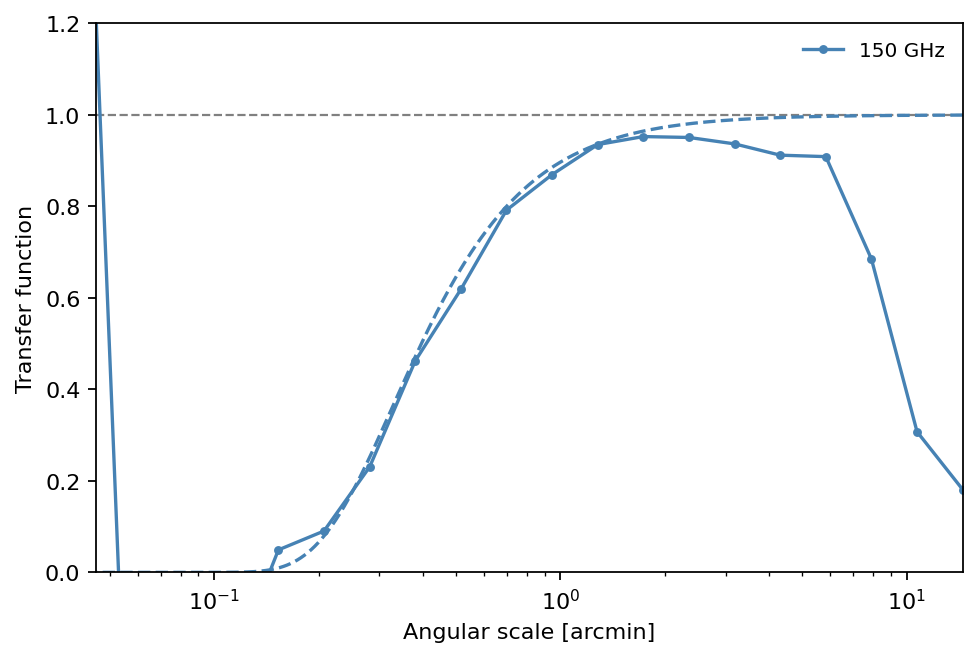
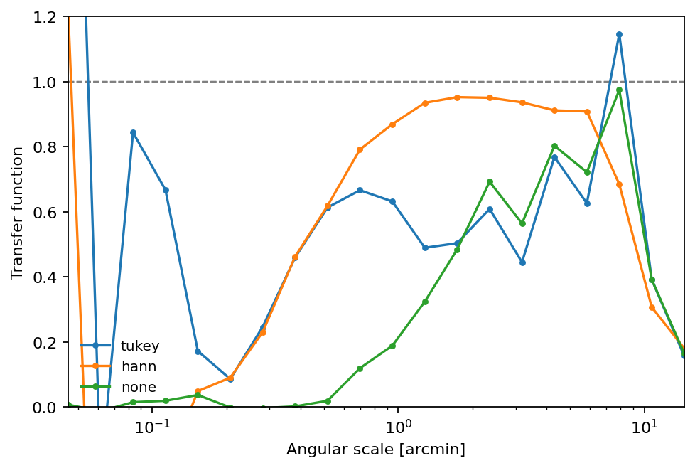

Compute a transfer function¶
Atmospheric emission can dominate the noise budget and must be removed from the time-ordered data before mapping. This filtering inevitably projects out correlated sky modes, suppressing signal at large angular scales. The spatial transfer function \(T(u)\) provides a direct estimate of this scale-dependent signal loss. maria includes a built-in function to compute this, using the cross-spectrum between the output and the known input map:
Please note that the cross-spectrum is used instead of the power ratio \(P_{\rm out}/P_{\rm in}\) because noise in the output is uncorrelated with the input and averages to zero, leaving an unbiased estimate.
Input sky¶
In this tutorial, we simulate a two-frequency observation of a galaxy cluster at 150 and 270 GHz and recover a map with the BinMapper. We load the same map at both frequencies — any difference in the recovered signal will come from the instrument and the filtering alone.
[1]:
import numpy as np
import matplotlib.pyplot as plt
import maria
from maria.io import fetch
map_filename = fetch("maps/cluster2.fits")
nu = np.array([150e9, 270e9])
m1 = maria.map.load(filename=map_filename, nu=nu[0], width=20.00/60.00)
m2 = maria.map.load(filename=map_filename, nu=nu[1], width=20.00/60.00)
# Arbitrary signal boost to improve the SNR of the output map
m1.data *= -5.0e3
m2.data *= -5.0e3
maps = maria.map.concatenate([m1, m2], dim="nu")
print(maps)
maps.to("K_RJ").plot(slices=dict(nu=[0, 1]), cmap="RdYlBu_r")
2026-06-05 14:21:29.112 INFO: Passed map size kwargs {'width': 0.3333333333333333} will overwrite map size metadata {'xi_res': 0.0009765625, 'eta_res': -0.0009765625}
2026-06-05 14:21:29.172 INFO: Passed map size kwargs {'width': 0.3333333333333333} will overwrite map size metadata {'xi_res': 0.0009765625, 'eta_res': -0.0009765625}
ProjectionMap:
data(2, 1024, 1024):
min: 2.502e-05
max: 1.923e-02
units: compton_y
quantity: compton_y
nu(2):
values: [150. 270.] GHz
eta(1024):
height: 20’
res: -1.173”
xi(1024):
width: 20’
res: 1.173”
frame: ra/dec
center:
ra: 17ʰ20ᵐ0.00ˢ
dec: -10°00’0.00”
beam(maj, min, psi): (0 rad, 0 rad, 0 rad)
memory: 8.389 MB

Instrument and observation plan¶
We use TolTEC on the LMT, keeping only the 150 and 270 GHz arrays and dropping the 220 GHz one for efficiency. Because the beam is diffraction-limited, the 270 GHz array resolves angular scales roughly 1.8× finer than the 150 GHz array.
[2]:
from maria.instrument import get_instrument_config, Instrument
config = get_instrument_config("TolTEC")
config["arrays"] = {k: config["arrays"][k] for k in ["array-1", "array-3"]}
instrument = Instrument.from_config(config)
print(instrument)
instrument.plot()
Instrument(2 arrays)
├ arrays:
│ n field_of_view max_baseline bands polarized primary_size
│ array-1 1172 4.2’ 0 m [toltec/f150] True 50 m
│ array-3 4012 4.2’ 0 m [toltec/f270] True 50 m
│
└ bands:
name center width η NEP NET_RJ NET_CMB FWHM
0 toltec/f150 150 GHz 40 GHz 0.5 30 aW√s 110.2 uK_RJ√s 191 uK_CMB√s 10.5”
1 toltec/f270 270 GHz 50 GHz 0.5 30 aW√s 81.69 uK_RJ√s 404.4 uK_CMB√s 5.832”

[3]:
from maria import Planner
planner = Planner(
target=maps,
start_time="2024-01-01T22:00:00",
site="llano_de_chajnantor",
constraints={"el": (60, 90)},
)
plans = planner.generate_plans(
total_duration=0.1 * 3600,
max_chunk_duration=3600,
scan_options={"radius": 6.5 / 60.0, "miss_factor": 0.3},
)
print(plans)
plans[0].plot()
PlanList(1 plans, 360 s):
start_time duration target(ra,dec) center(az,el)
chunk
0 2024-01-02 13:15:00.000 +00:00 360 s (260°, -9.999°) (67.64°, 61.19°)

Simulation¶
Passing map=maps attaches the ground-truth sky to each output TOD so the mapper can propagate it to the output map automatically.
[4]:
sim = maria.Simulation(
instrument,
plans=plans,
site="llano_de_chajnantor",
map=maps,
atmosphere="2d",
)
print(sim)
tods = sim.run()
tods[0].plot()
Constructing atmosphere: 100%|██████████| 8/8 [00:00<00:00, 10.92it/s]
2026-06-05 14:21:43.964 INFO: Simulating observation 1 of 1
Simulation
├ Instrument(2 arrays)
│ ├ arrays:
│ │ n field_of_view max_baseline bands polarized primary_size
│ │ array-1 1172 4.2’ 0 m [toltec/f150] True 50 m
│ │ array-3 4012 4.2’ 0 m [toltec/f270] True 50 m
│ │
│ └ bands:
│ name center width η NEP NET_RJ NET_CMB FWHM
│ 0 toltec/f150 150 GHz 40 GHz 0.5 30 aW√s 110.2 uK_RJ√s 191 uK_CMB√s 10.5”
│ 1 toltec/f270 270 GHz 50 GHz 0.5 30 aW√s 81.69 uK_RJ√s 404.4 uK_CMB√s 5.832”
├ Site:
│ region: chajnantor
│ timezone: America/Santiago
│ location:
│ longitude: 67°45’17.28” W
│ latitude: 23°01’45.84” S
│ altitude: 5.064 km
│ seasonal: True
│ diurnal: True
├ PlanList(1 plans, 360 s):
│ start_time duration target(ra,dec) center(az,el)
│ chunk
│ 0 2024-01-02 13:15:00.000 +00:00 360 s (260°, -9.999°) (67.64°, 61.19°)
├ Atmosphere(8 processes with 8 layers):
│ ├ spectrum:
│ │ region: chajnantor
│ └ weather:
│ region: chajnantor
│ altitude: 5.064 km
│ time: Jan 2 10:17:59 -03:00
│ pwv[mean, rms]: (2.553 mm, 76.6 um)
└ ProjectionMap:
data(1, 2, 1, 1024, 1024):
min: 2.502e-05
max: 1.923e-02
units: compton_y
quantity: compton_y
stokes(1):
components: ['I']
nu(2):
values: [150. 270.] GHz
t(1):
values: [1.78066929e+09] s
eta(1024):
height: 20’
res: -1.173”
xi(1024):
width: 20’
res: 1.173”
frame: ra/dec
center:
ra: 17ʰ20ᵐ0.00ˢ
dec: -10°00’0.00”
beam(maj, min, psi): (0 rad, 0 rad, 0 rad)
memory: 8.389 MB
Generating turbulence: 100%|██████████| 8/8 [00:00<00:00, 49.90it/s]
Sampling turbulence: 100%|██████████| 8/8 [00:05<00:00, 1.56it/s]
Computing atmospheric emission: 100%|██████████| 2/2 [00:03<00:00, 1.76s/it, band=toltec/f270]
Sampling map: 100%|██████████| 2/2 [01:10<00:00, 35.29s/it, band=toltec/f270, channel=(210 GHz, inf Hz)]
Generating noise: 100%|██████████| 2/2 [00:06<00:00, 3.41s/it, band=toltec/f270]
2026-06-05 14:24:05.188 INFO: Simulated observation 1 of 1 in 141.2 s

Mapmaking¶
Common-mode subtraction (remove_modes) and per-detector spline removal (remove_spline) suppress large-scale correlated signal. Both operations remove power at long time scales, which maps to large angular scales on the sky, i.e., where \(T\) will fall below 1.
Note:
map_postprocessingis intentionally left empty here. Any map-level post-processing (smoothing, filtering, etc.) applied after binning would itself suppress or modify signal in the output map, and its effect would be absorbed into the measured \(T(u)\). To isolate the transfer function of the TOD filtering alone, always setmap_postprocessing={}when computing transfer functions.
[5]:
from maria.mappers import BinMapper
mapper = BinMapper(
tods=tods,
units="uK_RJ",
stokes="I",
resolution=maps.resolution,
tod_preprocessing={
"remove_modes": {"modes_to_remove": 1},
"remove_spline": {"knot_spacing": 60, "remove_el_gradient": True},
},
map_postprocessing={},
)
output_map = mapper.run()
2026-06-05 14:24:33.340 INFO: Inferring center {'ra': '17ʰ20ᵐ0.81ˢ', 'dec': '-9°59’55.42”'} for mapper
2026-06-05 14:24:33.352 INFO: Inferring mapper width 16.9’ for mapper from observation patch
2026-06-05 14:24:33.353 INFO: Inferring mapper height 16.9’ to match supplied width
Preprocessing TODs: 100%|██████████| 1/1 [00:39<00:00, 39.39s/it]
Mapping: 100%|██████████| 1/1 [00:10<00:00, 10.66s/it, tod=1/1]
[6]:
output_map.plot(slices=dict(nu=[0, 1]), cmap="RdYlBu_r")

Transfer function¶
To compute the transfer function, call transfer_function() on the output map. This will return a TransferFunction object containing the transfer function \(T(u)\) and the corresponding spatial frequencies \(u\). The transfer function can be plotted to visualize the scale-dependent signal loss.
[7]:
tf = output_map.transfer_function(window=True)
print(tf)
TransferFunction:
channels: 2
nu: [150. 270.] GHz
bins: 20
u: [237, 7.55e+04] cycles/rad
T: [-10.468, 1.425]
To visualize the transfer function, it is possible to use the built-in plot() method. Solid curves show the measured \(T(u)\), while dashed curves show the Gaussian beam per channel. The large-scale rolloff reflects the TOD filtering above, while the small-scale rolloff tracks the beam.
[8]:
tf.plot(x_unit="arcmin")
[8]:
<Axes: xlabel='Angular scale [arcmin]', ylabel='Transfer function'>

Finally, individual channels can be selected with slices=dict(nu=[...]), consistent with how slices is used in .plot():
[9]:
tf.plot(slices=dict(nu=[0]), x_unit="arcmin")
[9]:
<Axes: xlabel='Angular scale [arcmin]', ylabel='Transfer function'>

Apodization window¶
Before the FFT, transfer_function() multiplies both maps by a 2D apodization window to suppress spectral leakage from sharp map edges. The window argument controls which window is applied:
Value |
Shape |
When to use |
|---|---|---|
|
Full cosine taper to zero at both edges |
Strongest leakage suppression; best when the field is much larger than the scales of interest, since it discards edge signal |
|
Cosine taper on outer |
Mild apodization that preserves most of the map signal and substantially reduces edge leakage |
|
User-supplied 2D window |
Full control — e.g. to mask point sources or weight by the hit-count map |
|
No window (rectangular) |
Maximum large-scale sensitivity; avoid unless the map has periodic or artificially zero-padded boundaries |
The taper parameter (default 0.1) sets the fraction of each axis tapered by the Tukey roll-off. Increasing it toward 1 makes the Tukey window approach a Hann window.
Tip: for typical BinMapper output maps, where valid signal extends close to the boundary,
"tukey"with a smalltaperis preferred over"hann". The full Hann taper downweights map edges heavily, effectively shrinking the usable field and worsening large-scale mode recovery.
[10]:
fig, ax = plt.subplots(figsize=(6, 4), constrained_layout=True)
windows = [
("tukey", dict(window="tukey", taper=0.1)),
("hann", dict(window="hann")),
("none", dict(window=False)),
]
for i, (label, kwargs) in enumerate(windows):
tf_w = output_map.transfer_function(slices=dict(nu=[0]), **kwargs)
tf_w.plot(ax=ax, x_unit="arcmin", add_beam=False)
ax.lines[-1].set_label(label)
ax.lines[-1].set_color(f"C{i}")
ax.legend(frameon=False, fontsize=9)
plt.show()
